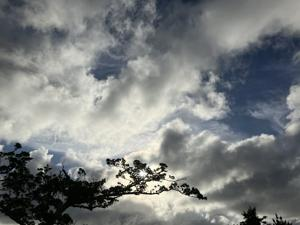
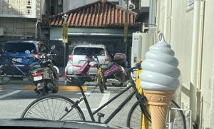

うるがいの話 ある日
最新: ファミリーマート【うるがいの話 ある日】とは 一日だけのプログです
『うるがいの話』の最新一日だけのプログで、通信料が少なく経済的だ。カニの画像をクリックすると全ての日付が載る『うるがいの話』サイトを表示します
|
|
【うるがいの話】 うるがい(ｳﾙｶﾞｲ urugai)とは、『もずくがに』の名前でとても大きくなります。 |
|---|---|
|
|
【カミマヤーの話】 猫のことを方言でマヤーといいます。カミマヤー（kamimayaa）とは、神の猫のことです。 |
|
【たながぁの音楽】 たながぁ（ﾀﾅｶﾞｰ tanagaa）とは手長えびのことで、何種類かあり大きいのは車 エビぐらいになります。 |

|
【ぶながぁの話】 ぶながぁ(ﾌﾞﾅｶﾞｰ bunagaa)とは、赤い髪の毛、赤い身体、そして身長は１ｍ２０ｃｍ ぐらい、川の蟹を食べているの目撃された。場所は沖縄県国頭郡大宜味村のと ある村僕の隣近所に住んでいる爺さんから、聞いた話です。 |
|
|
【ギーマの話】 ギーマ(giima)とは、山原の里山に咲くスズランに似た、 花を付けます。実は食べられます、 気が付くと口の周りが紫になっています。 |
2025年06月10日 (火）ファミリーマート
16:21

ヨメのお義母さんの９０歳になる妹の叔母さんの体調（痒み）が良
くないので、ヨメが病院へ付き添いに行って欲しいと頼まれた。朝
の７時２０分に家を出て、８時２０分に叔母さんを家に着く予定だ
がその前に、ヨメがファミリーマートに入る。駐車場で外を見てい
ると自転車に乗った疲れ切った中年男性が、駐車場に停まった。降
りると自転車に鍵をかけた。ホー、大したものでもないのに。その
うち屈伸運動をする、見るからに疲れている様子だった。

叔母さんは、総合病院の皮膚科へ行ったが、腎臓が悪いことが原因
らしく、かかりつけの胃腸科の病院（内科も行っている）へ移動。
そこでは、以前から腎臓の機能が落ちていることは、分かっていて
本人にも伝えているとのこと。痒みの原因は、食事をまともにとっ
ていないこと（食欲がなにので、グロモントやタフマンなどの栄養
ドリンクを常用している！）。そして、栄養指導を受けることにな